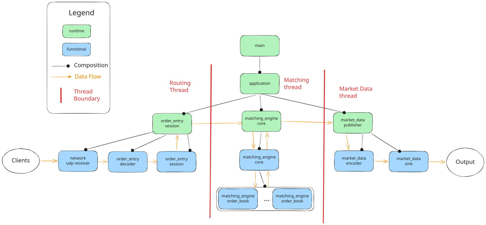
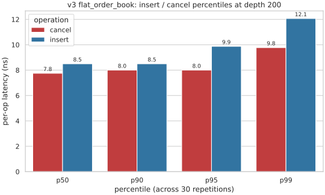

01 — Architecture
Architecture

Source: docs/architecture.svg — open in a new tab to zoom.
Three threads, each running a kraken::event_loop — a single consumer plus an SPSC blocking queue of posted closures, plus an optional set of pollers run on the consumer thread every iteration. The two cross-thread edges (input → processing, processing → output) hand off domain values via post; the asio io_context rides on the input loop as a poller, so the UDP receiver shares the input thread without owning one of its own. The shipped binary configures every loop with kraken::busy_spin_idle, so the cross-thread hop carries no wake-up latency. Loop semantics are documented in docs/event-loop.md; the startup ordering is in docs/runtime-startup.md.
02 — Highlights
Highlights
Five claims this submission stands behind. The longer write-up lives in docs/highlights.md.
H.01
Fast
At a representative 200-order single price level, the production v3 book reports ~12 ns p99 insert and ~10 ns p99 cancel latency.
H.02
Resilient
Clean build under GCC and Clang, every sanitiser combination green, zero warnings against a flag set well beyond -Wall -Wextra.
H.03
Modular
Every pipeline stage — including the UDP backend and the matching engine itself — plugs in behind a typed seam and swaps without touching the rest of the code.
H.04
Safe by design
Strong types, exhaustive switches, structured errors, and a clean runtime / domain split move whole classes of bug to compile time.
H.05
Configurable
Reshape the system — threading, idle strategies, backends, sinks — by changing config, not code.
Latency snapshot
v3 flat_order_book percentiles at depth 200.
The benchmark records insert and cancel batches on a single-symbol, single-price-level workload. The current p99 figures are the headline numbers surfaced in the project README and performance note.
- Insert p99
- 12.07ns/op
- Cancel p99
- 9.78ns/op
* Google Benchmark reports one value per repetition, and each value is itself a mean across the 200 iterations the registration pins. These percentiles describe run-to-run dispersion of averages, not true per-call tail latency. See docs/performance.md for the full methodology.

docs/performance/latency_percentiles.svg, generated from docs/performance/data/benchmark.json.03 — Constraints
Constraints
The exercise is closed: CSV input over UDP on a fixed port, CSV output on stdout, a fixed scenario set. The constraints below shape the design more than any individual choice.
- Inputs are well-formed. The decoder treats the documented grammar as a precondition. The matching engine trusts the typed commands it receives.
- Inputs are static and finite. No load test, no live exchange feed, no transport changes. The wiring layer hard-codes the three-thread topology rather than abstracting it.
- The book is the core of the exercise. Strong typing, error handling, and runtime composition are scaffolding. The matching loop and the per-symbol book are what an evaluator most wants to read, and most of the complexity sits there.
- The submission ships once. No future maintainers, no roadmap, no migration story. Extensibility seams stay where they cost nothing to keep and are removed where they would only add code.
- Production conventions still apply. Code organisation, documentation, testing, error handling, and build hygiene follow production conventions. The structural shape is production; the leaves are one-shot.
Boundary contract
Narrow contracts at the boundaries.
A production trading system never trusts the wire. It validates every field of every datagram, treats malformed input as routine, and turns hostile input into a structured rejection without destabilising the matching loop. That discipline costs real plumbing.
This submission inverts the contract. The hidden tests use the same well-formed CSV shapes as the provided scenarios, so the CSV decoder treats field count, marker validity, numeric parseability, side tokens, and symbol length as preconditions. The kraken::result<command> seat at the decoder boundary stays in place so a future non-CSV transport with richer errors can slot in. The cost is recorded as a follow-up in DESIGN.md.
04 — Principles
Design principles
Eight principles the codebase commits to. Each one names a representative landing spot in code. The full discussion is in docs/cpp-design-principles.md.
P.01
Functional core, imperative shell.
Domain libraries are pure synchronous code over value types. Effects sit in a wiring shell that composes the pure stages.
P.02
Domain-owned vocabulary.
Each domain declares its own types and errors. Peer domains stay independent; the composition domain consumes both.
P.03
Compile-time correctness, strong types.
Strong-typed primitives plus designated initializers. Reordering or swapping arguments fails to compile.
P.04
Compile-time correctness, exhaustive variants.
enum class switches with no default; visiting std::variant through match. Adding an alternative without an overload fails to compile.
P.05
Structured errors at boundaries.
kraken::result<T> is the interior vocabulary; boundaries consume it with leaf::try_handle_* and return void/optional/expected. The matching loop trusts the typed values the boundary already validated.
P.06
Declarative style.
engine::handle reads as named stages — duplicate check, ack, match, residual, top-of-book — with predicates staged before the branching.
P.07
Performance discipline.
Three book implementations live in the tree (v1, v2, v3); each optimisation iteration is measured against the simpler one. Hot-path swaps happen only when a benchmark or invariant requires one.
P.08
Behaviour-first tests.
Catch2 drives the engine through send and captures emissions via on_event. The unit suite uses no sockets, loops, or threads.
05 — Decisions
Decisions
Major decisions are recorded as ADRs. Each one comes with a decision-matrix HTML artifact that scores the options against the decision drivers. Localized decisions are commented inline at the call site; the more consequential ones are listed below.
ADR 0001
C++ project layout
Aggregated src/ / test/ / benchmarks/ trees under submission/, stuttering <lib>/<lib>/ headers, library plus thin executable. Picked over module-colocated tests because it gives a single declaration site for the Catch2 and Google Benchmark dependencies and lets tooling target each tree at one stable path.
ADR 0002
Copy-vendor third-party utilities
Upstream headers under submission/vendor/ with a pinned SHA and the upstream LICENSE. Picked over git submodules, CMake FetchContent, and ExternalProject because the grading docker build must not depend on a configure-time network fetch, and the git bundle delivery format does not carry submodule contents.
ADR 0003
Parse CSV as fixed-shape commands
Byte zero selects the command type, the message-specific decoder splits the known field count, and numeric fields go through kraken::from_chars. Picked over a general tokenizer or a parser library because the exercise grammar is closed; field validity is treated as a documented precondition rather than threaded through kraken::result.
ADR 0004
Stage the order-book data structure by iteration
Sorted price-level maps for the first iteration — the smallest implementation that passes the suite with the right semantics — then intrusive lists plus a shared object pool for the optimisation iteration. The shipped binary uses the optimisation-iteration shape; both implementations live in the tree and run head-to-head in a benchmark.
Localized decisions
-
Engine-owned shared
boost::poolfor resting-order storage. One pool, shared across every per-symbol book. Symbol activity is uneven, so a shared pool absorbs the variance: slots freed by a shallow symbol are immediately available to a deep one. -
unordered_flat_mapfor the cross-symbol identity index. The index is used only for point access. Iterator and reference stability across rehashes is not load-bearing, so the flat variant gives better lookup-per-cache-line behaviour. -
Intrusive list plus pool layout inside a price level.
Each resting order sits in a pool-allocated node hooked into the price level's intrusive list. Nodes never relocate, so the cross-symbol index can hold raw
order_node*with stable lifetime. - SPSC blocking queue coupled to the event loop. The three-thread topology has exactly two cross-thread edges, each with one producer and one consumer. MPSC would pay for synchronisation the topology never exercises.
06 — Read more
Where to read next
Start here
- The problem statement
- EXERCISE.md
- The technical pitch in one page
- docs/highlights.md
How the project thinks
- How the project thinks about C++
- docs/cpp-design-principles.md
- Showcase of applied principles in code
- docs/showcase.md
- Why we made the major choices
- DESIGN.md
- Architectural decisions with full reasoning
- docs/adr/
How the system works
- A map of the source tree
- submission/README.md
- The matching engine spec
- docs/engine-specs.md
- How the application wires itself together at startup
- docs/runtime-startup.md
- The event loop primitive each thread runs
- docs/event-loop.md
Build & operate
- Dependency strategy and inventory
- DEPENDENCIES.md
- Build presets and developer setup
- DEVELOPING.md
- How to tune the host for production-grade latency
- docs/tuning-guide.md